About Me
I'm an Assistant Professor at the Department of Statistics, University of Wisconsin–Madison.
Previously, I was a postdoctoral researcher in the Department of Computer Science, UCLA,
under the supervision of Prof. Yizhou Sun and
Prof. Wei Wang.
I completed my Ph.D. at Peking University (PKU)
under the supervision of Prof.
Minghua Deng.
I also work closely with Prof. Hongyu Zhao
and Prof. Xiting Yan at Yale University.
I'm a machine learning researcher with a focus on interdisciplinary applications (AI4Science). Recently, I've been focused on LLM Post-training, LLM (Agent) Applications, and Machine Learning for Graphs and Dynamical Systems.
If you are interested in my research or would like to work with me, please feel free to email me!
News
- Nov 2025: Appointed as an Area Chair for ICML 2026.
- Nov 2025: Appointed as an Associate Editor for TCVST (Impact Factor = 11.1).
- Oct 2025: Appointed as an Action Editor for TMLR.
- Sep 2025: Appointed as an Area Chair for CVPR 2026.
- Aug 2025: Appointed as an Area Chair for ICLR 2026.
Selected Publications (Full list: Google Scholar)
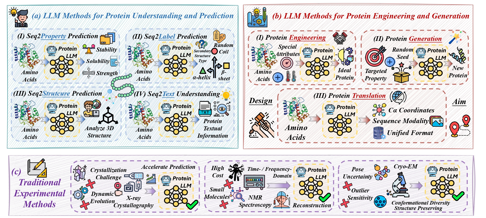
Protein Large Language Models: A Comprehensive Survey
Yijia Xiao, Wanjia Zhao, Junkai Zhang, Yiqiao Jin, Han Zhang, Zhicheng Ren, Renliang Sun, Haixin Wang, Guancheng Wan, Pan Lu, Xiao Luo, Yu Zhang, James Zou, Yizhou Sun, and Wei Wang
In The Conference on Empirical Methods in Natural Language Processing Findings (EMNLP Findings), 2025
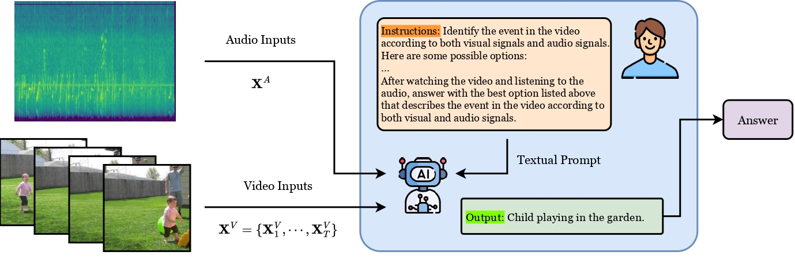
Multifaceted Evaluation of Audio-Visual Capability for MLLMs: Effectiveness, Efficiency, Generalizability and Robustness
Yusheng Zhao, Xiao Luo, Junyu Luo, Weizhi Zhang, Zhiping Xiao, Wei Ju, Philip S. Yu, and Ming Zhang
In The Conference on Empirical Methods in Natural Language Processing Findings (EMNLP Findings), 2025
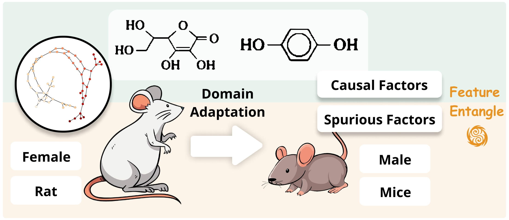
Sparse Causal Discovery with Generative Intervention for Unsupervised Graph Domain Adaptation
Junyu Luo, Yuhao Tang, Yiwei Fu, Xiao Luo, Zhizhuo Kou, Zhiping Xiao, Wei Ju, Wentao Zhang, and Ming Zhang
In International Conference on Machine Learning (ICML), 2025
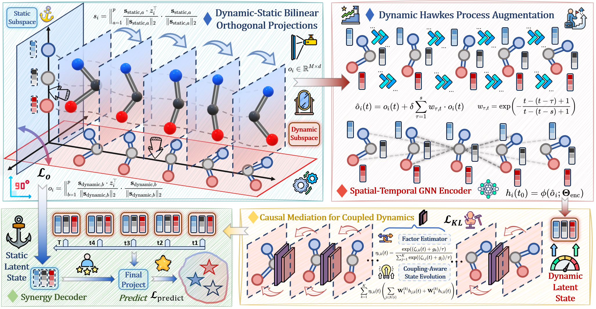
Rethink GraphODE Generalization within Coupled Dynamical System
Guancheng Wan, Zijie Huang, Wanjia Zhao, Xiao Luo, Yizhou Sun, and Wei Wang
In International Conference on Machine Learning (ICML), 2025
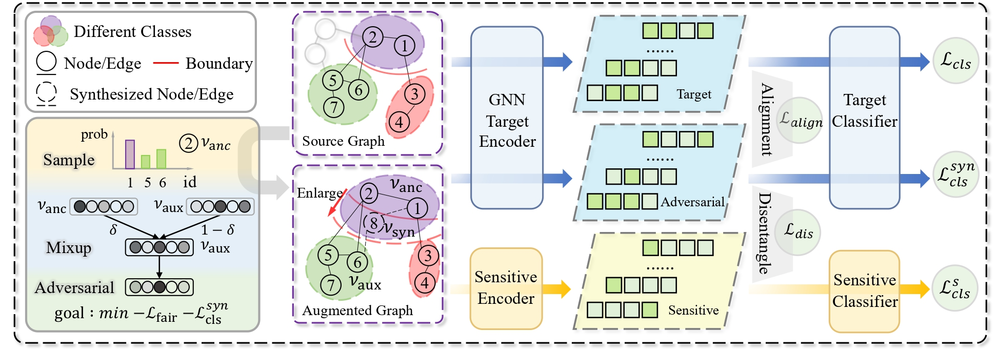
DANCE: Dual Unbiased Expansion with Group-acquired Alignment for Out-of-distribution Graph Fairness Learning
Yifan Wang, Hourun Li, Ling Yue, Zhiping Xiao, Jia Yang, Changling Zhou, Wei Ju, Ming Zhang, and Xiao Luo
In International Conference on Machine Learning (ICML), 2025
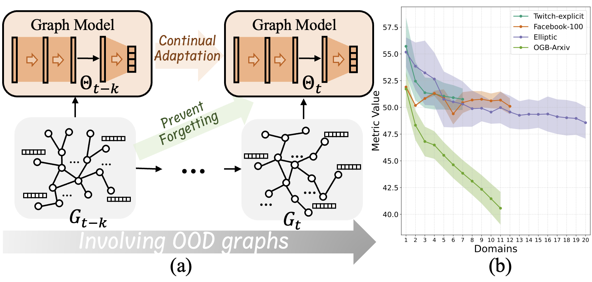
GCAL: Adapting Graph Models to Evolving Domain Shifts
Ziyue Qiao, Qianyi Cai, Hao Dong, Jiawei Gu, Pengyang Wang, Meng Xiao, Xiao Luo, and Hui Xiong
In International Conference on Machine Learning (ICML), 2025
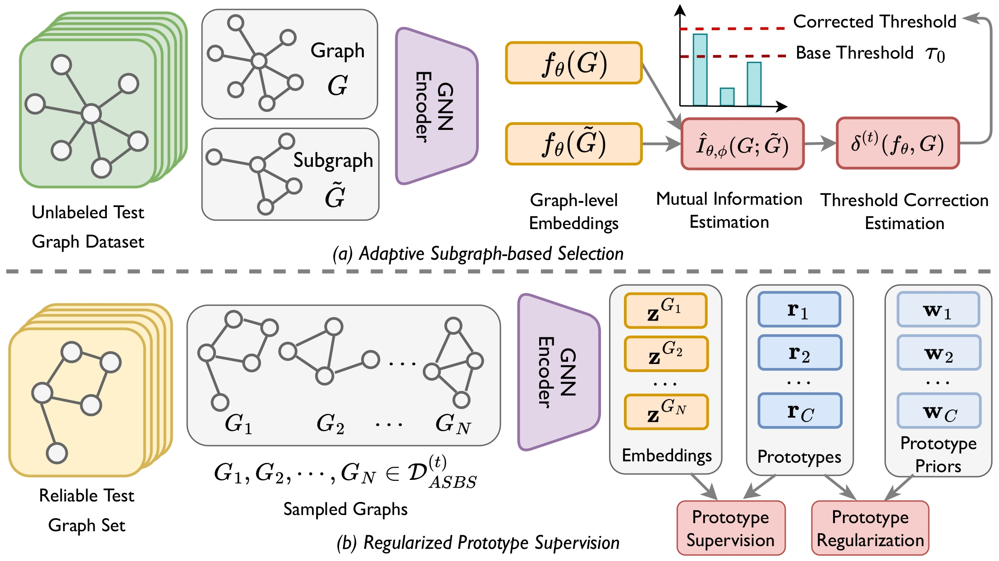
Test-time Adaptation on Graphs via Adaptive Subgraph-based Selection and Regularized Prototypes
Yusheng Zhao, Qixin Zhang, Xiao Luo, Junyu Luo, Wei Ju, Zhiping Xiao, and Ming Zhang
In International Conference on Machine Learning (ICML), 2025
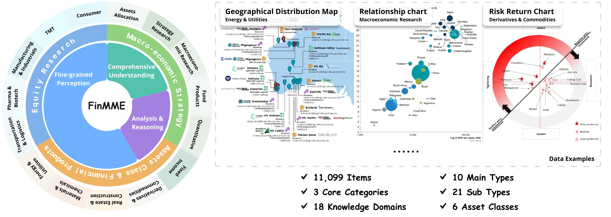
FinMME: A Financial Multi-Modal Evaluation Dataset
Junyu Luo, Zhizhuo Kou, Liming Yang, Xiao Luo, Jinsheng Huang, Zhiping Xiao, Jingshu Peng, Chengzhong Liu, Jiaming Ji, Xuanzhe Liu, Sirui Han, Ming Zhang, and Yike Guo
In The Annual Meeting of the Association for Computational Linguistics (ACL), 2025
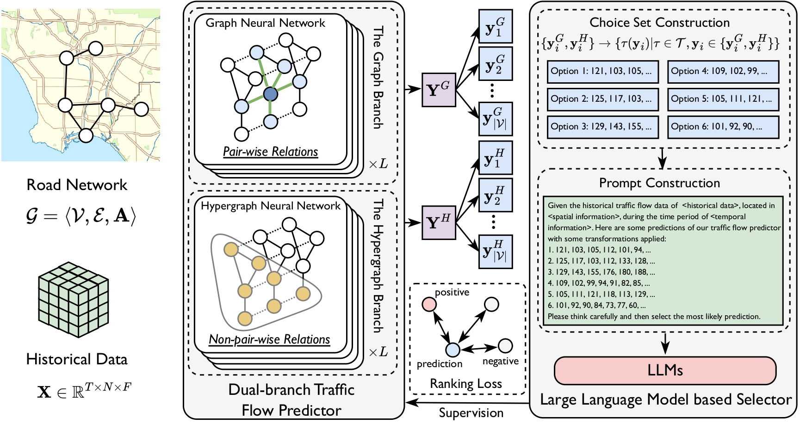
Embracing Large Language Models in Traffic Flow Forecasting
Yusheng Zhao, Xiao Luo, Haomin Wen, Zhiping Xiao, Wei Ju, Ming Zhang
In The Annual Meeting of the Association for Computational Linguistics Findings (ACL Findings), 2025
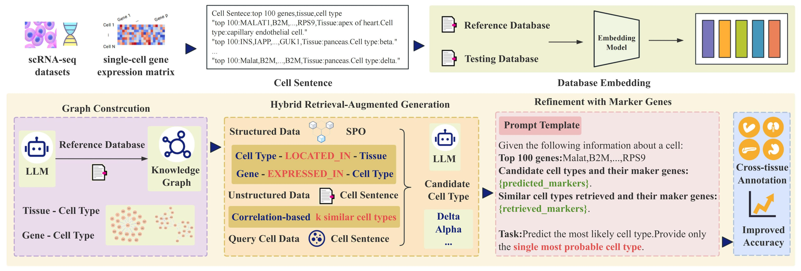
scRAG: Hybrid Retrieval-Augmented Generation for LLM-based Cross-Tissue Single-Cell Annotation
Zhiyin Yu, Chao Zheng, Chong Chen, Xian-Sheng Hua, and Xiao Luo
In The Annual Meeting of the Association for Computational Linguistics Findings (ACL Findings), 2025
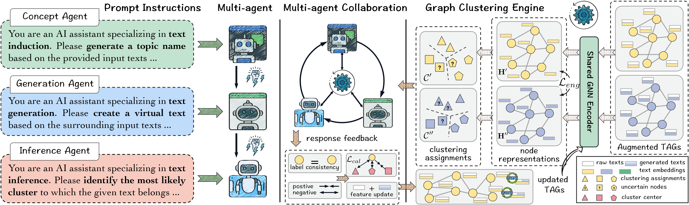
MARK: Multi-agent Collaboration with Ranking Guidance for Text-attributed Graph Clustering
Yiwei Fu, Yuxing Zhang, Chunchun Chen, Jianwen Ma, Quan Yuan, Rong-Cheng Tu, Xinli Huang, Wei Ye, Xiao Luo, and Minghua Deng
In The Annual Meeting of the Association for Computational Linguistics Findings (ACL Findings), 2025
Selected Awards
- Chancellor's Award for Postdoctoral Research, UCLA
- NeurIPS 2023 Workshop DLDE, Best Paper Award
- Institute for Digital Research and Education Postdoctoral Fellowship, UCLA
- ICDM 2022 Best Paper Candidate Award
Selected Academic Services
Associate Editor/Editorial Board Member: BMC Bioinformatics (2023 - ), Pattern Recognition (2025 - ), IEEE Journal of Biomedical and Health Informatics (2025 - ), Transactions on Machine Learning Research (2025 - ), IEEE Transactions on Emerging Topics in Computational Intelligence (2025 - ), IEEE Transactions on Circuits and Systems for Video Technology (2025 - ).
Area Chair: ACM MM 2024, ICML 2025, ACL ARR, ACM MM 2025, ECML-PKDD 2025, NeurIPS 2025, ICLR 2026, CVPR 2026, ICML 2026
Senior PC Member: IJCAI 2025, CIKM 2025, AAAI 2026